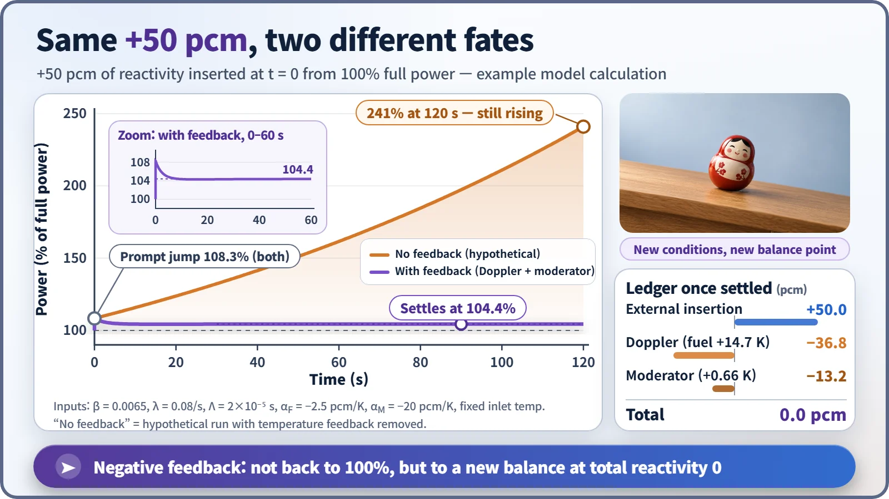
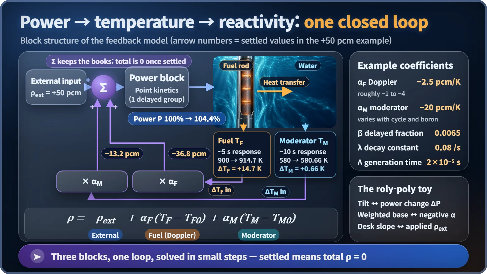

Modeling, Simulation & Computation · 272
A Roly-Poly Toy on a Tilted Desk — How Reactivity Feedback Modeling Shows a Reactor Steadying Itself
Close the loop from power to temperature to reactivity and a +50 pcm nudge settles at 104.4% instead of running away, because total reactivity returns to zero.
A reactivity feedback model closes the loop power → temperature → reactivity → power with three small sets of equations and solves them together. In a worked example with +50 pcm of added reactivity, power without feedback keeps climbing, while with negative temperature feedback it settles at 104.4%, the point where total reactivity is back to zero. [1]
A roly-poly toy on a tilted desk
Flick a roly-poly toy and it lurches over, then the heavy weight in its rounded base pulls it back upright. Put it on a slightly tilted desk, though, and it neither falls over nor stands perfectly straight. It comes to rest leaning a little, by about as much as the slope.
That scene holds the punchline. Add a small amount of reactivity to a reactor, and in a computer calculation the power behaves exactly like that toy. We'll look at the result graphs first, then open up the calculation behind them.
The same 50 pcm, two completely different graphs
A reactor is running at full power (100%). At time zero we add +50 pcm of reactivity. Reactivity measures how far the reactor has moved from balance, and a pcm is one hundred-thousandth: a small nudge, about what you'd get from pulling a control rod out just a little.

First, a calculation with feedback deliberately switched off. Power jumps almost immediately to about 108%, then climbs exponentially, growing 2.7-fold roughly every 150 seconds: 162% at 60 seconds and 241% at 120 seconds. This is a hypothetical comparison that asks, "What if there were no feedback?"
Now the calculation with feedback on. The initial jump to 108% happens just the same, but within a few seconds the curve bends over, passes 104.3% at about 15 seconds, and by around 30 to 40 seconds quietly comes to rest at 104.4%. Like the toy on the tilted desk, it neither returns to 100% nor climbs forever. [2]
Lift the hood and you find three equations
The model closes the loop in which power changes temperatures, which in turn change reactivity, and solves everything together. It has three parts.
1. The power block. Given the reactivity, it calculates how power changes. These are the point kinetics equations, simplified so that the delayed neutrons (neutrons that appear a little after fission) are lumped into a single group.
2. Two temperature blocks. When power rises, the fuel heats up first, then the heat passes into the water (the moderator), which warms afterward. Each is treated as a single lump with one "heat piggy bank" equation: heat in minus heat out equals how fast it warms. The fuel responds within seconds; the water takes tens of seconds.
3. The reactivity summing block. It turns temperature changes into reactivity and sends them back:
ρ = ρext + αF × (TF − TF0) + αM × (TM − TM0)
ρext is the 50 pcm we added, TF and TM are the fuel and moderator temperatures, and those marked 0 are the starting temperatures. Each α is a temperature coefficient: the change in reactivity per degree of temperature rise. This example uses a fuel Doppler coefficient αF = −2.5 pcm/K and a moderator temperature coefficient αM = −20 pcm/K. Both are negative, so rising temperature takes reactivity away. [3]

| Example input | Value |
|---|---|
| Delayed-neutron fraction β | 0.0065 (650 pcm) |
| One-group decay constant λ | 0.08 /s |
| Prompt-neutron generation time Λ | 2×10⁻⁵ s |
| Doppler coefficient αF | −2.5 pcm/K |
| Moderator temperature coefficient αM | −20 pcm/K |
| Starting fuel / moderator temperature | 900 K / 580 K |
Connect the three blocks with arrows and you get a closed loop. The computer chops time into very short steps and solves the equations together, one step at a time.
The reactivity ledger at the moment it settles
Once power has stopped at 104.4%, the fuel temperature has risen by about 14.7 degrees, so Doppler contributes −36.8 pcm; the water has warmed by about 0.66 degrees, so the moderator effect contributes −13.2 pcm. Add them up: +50 − 36.8 − 13.2 = 0. Power stopped there because total reactivity returned to zero.
The two effects arrive at very different times. At 5 seconds, Doppler has already taken away −29 pcm, while the moderator has managed only −3 pcm. The fuel is where the heat is born, so it responds immediately; the water has to be handed the heat first. That difference in speed is why the model uses two temperature blocks instead of one.
You can check the result by hand. In this example model, the reactivity that feedback removes when power rises by a full 100% is about 1,137.5 pcm, so 50 pcm can raise power by 50 ÷ 1,137.5 ≈ 4.4%, matching the computer's 104.4%. Cross-checks like this are the first step toward a model you can trust.
What the roly-poly analogy can hide
"Negative feedback returns power to where it was." It settles at a new balance point. Just as a heavier weight makes the toy lean less, larger temperature coefficients mean power rises less.
"With feedback, power doesn't jump at all." The initial jump to 108% happens before temperatures have time to change. Feedback catches what comes after.
"The coefficients are always the same numbers." That is only a simplifying assumption. The real moderator temperature coefficient changes a lot with fuel burnup and with the boron dissolved in the coolant; at the beginning of an operating cycle it can approach zero, so it is managed with operating limits. [4]
That is why safety analyses rerun the same calculation with the least favorable coefficient values, like checking that the toy still won't topple with the lightest possible weight in its base.
Key takeaways
A reactivity feedback model ties the power equation, the fuel and moderator temperature equations and the reactivity summing equation into one closed loop. In the +50 pcm example, power without feedback keeps growing with a period of about 150 seconds, while negative feedback settles it at 104.4%. The condition for settling is not "power back where it started" but "total reactivity equals zero," and where it settles is set by the size of the temperature coefficients.